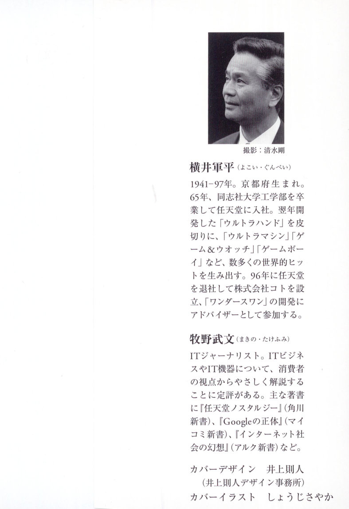

Preamble

Gunpei Yokoi
1941–97. Born in Kyoto Prefecture. In 1965, he graduated from the Faculty of Engineering at Doshisha University and joined Nintendo. Beginning with the Ultra Hand, which he developed the following year, he produced numerous worldwide hits, including the Ultra Machine, Game & Watch, and Game Boy. In 1996, he left Nintendo and founded Koto Co., Ltd., and served as an advisor on the development of the WonderSwan.
Takefumi Makino
IT journalist. He is known for his accessible writing on IT business and consumer technology from the user's perspective. His books include *Nintendo Nostalgia* (Kadokawa Shinsho), *The True Nature of Google* (Mycom Shinsho), *The Illusion of Internet Society* (ALC Shinsho), among others.
Cover design: Norihito Inoue (Inoue Norihito Design Office)
Cover illustration: Sayaka Shoji
[IMAGE: Portrait of Gunpei Yokoi]